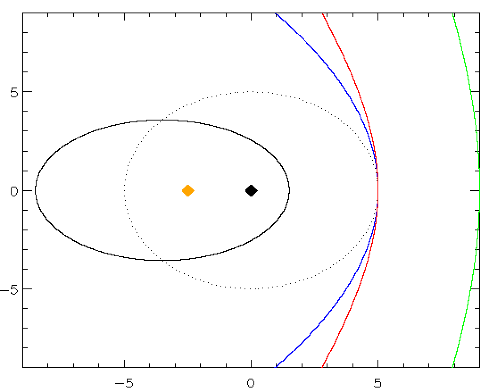

Forrige side🙂 🙁Kjeglesnitt
Likningen vi har kommet frem til er tilfeldigvis likningen for kjeglesnitt (conic sections) i polarkoordinater. Vet du hvilke 3 typer kurver som inngår i kjeglesnittene? Den ene er ellipser ja, men de andre to?
Trykk her når du har funnet ut av det
 De sorte linjene er ellipser, den blå er en parabel mens den røde og grønne er hyperbler. Den sorte prikkete ellipsen har e = 0 og er dermed en sirkel. Den heltrukne sorte linja er en ellipse med eksentrisitet e = 0.7. Den sorte prikken er brennpunktet i sirkelen (og dermed sentrum siden det er sirkel), den oransje prikken er brennpunktet i ellipsen. Neste side